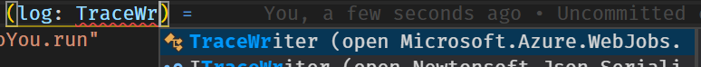
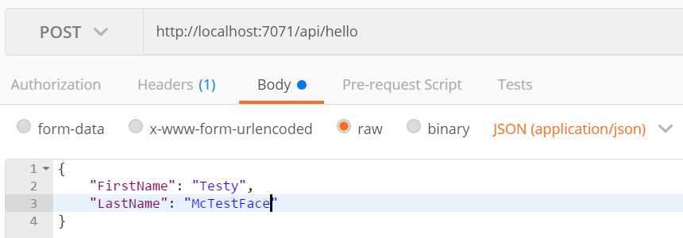

Previously we looked at Building Azure Functions with F# Script, which is still the only supported way of creating an Azure Function with F#, and a decent option for simple functions. So, if you need to play it safe (and stable) then that’s your best bet. However, in this post we are going to take a trip to the edge. We’ll be using .NET Core, Azure Functions Core Tools v2, and F#. However, instead of F# Script we’ll be creating a precompiled app!
Being on the bleeding edge has its drawbacks however. Chances are we’re going to see some bugs. The Core Tools are in beta after all, so that should be expected. I will explain how I work around the current issues, but chances are things will change between now and the time you read this. So if you don’t encounter an issue we’re solving here, that’s fantastic. It means Azure Functions with F# is moving in the right direction!
So without further ado, let’s get started.
Setup Your Environment Link to heading
If you’re not already setup for F# Azure Functions development, you can follow the same instructions from my previous post, with one exception. You will need to install v2 instead of v1 of the Azure Functions Core Tools. I would recommend you install it with npm instead of Chocolatey. I had some issues using the Chocolatey version and never got to the bottom of it.
To install v2 of the Core Tools use this command:
npm i -g azure-functions-core-tools@core --unsafe-perm true
Also, did I say “one exception”? I meant two. You’ll also need to install the .NET Core SDK.
Okay… three. Sheesh. I’m also going to use the NuGet Package Manager extension in Visual Studio Code, so you might as well install that now as well.
Create The Function App Link to heading
Now that you have what you need, let’s create our app. There is no F# template available yet, so we’re going to cheat a little and use the C# template and just change a few things. Here we go…
- Create a new directory (call it what you want)
- Open VS Code
- Invoke
Azure Functions: Create New Projectin the Command Pallette - Follow the prompts:
- Select the folder that will contain your function app: Press [Enter] to pick the current folder
- Select a language for your function project: Pick C#
You now have an empty Function App, initialized as a git repository. There’s a .gitignore file tailor-made for Azure Functions development.
The first thing we should do is rename the .csproj to .fsproj. While you’re in there, notice that we’re using the new project file format, as well as netstandard2.0.
Besides the Git repo and project file, there are actually quite a few goodies nestled in the .vscode folder.
VS Code Goodies Link to heading
The C# template is configured for making Azure Functions development in VS Code an awesome experience. However, not all of it is going to help us with F#. So let’s crack open each of these configuration files and see what we need to change. Expand the .vscode folder in VS Code, and let’s dig in.
extensions.json Link to heading
This file tells VS Code what extensions to recommend for the project. Obviously, we won’t be needing the ms-vscode.csharp extension, so you can remove it.
launch.json Link to heading
Here we find a configuration that allows us to attach a debugger to our function. How awesome is that! Also, you should rename C# to F# in the name field. Sure it’s a minor detail, but those who know me know I can’t live with these kind of inconsistencies! I feel better now. Do you?
settings.json Link to heading
This is where you customize VS Code’s workspace settings. In this case, there’s some configuration for the Azure Functions extension. We should change azureFunctions.projectLanguage to F#. However, it might be useful to leave this alone so we can generate new Functions based on their C# templates and simply port them to F#. I’ll leave this decision up to you.
tasks.json Link to heading
Last, but certainly not least, are the three tasks that allow you to clean, build, and run your Function App from the VS Code Command Palette. Or, if you prefer, using the following keyboard shortcuts:
- build:
Ctrl+Shift+B. - Run Functions Host:
Ctrl+Shift+R(with a custom keybinding)
If You Build It, They Will… Oh Link to heading
If you attempt to build the app now, you might see the following warning in the terminal. If not, feel free to skip this section.
warning NU1701: Package ‘Microsoft.AspNet.WebApi.Client 5.2.2’ was restored using ‘.NETFramework,Version=v4.6.1’ instead of the project target framework ‘.NETStandard,Version=v2.0’. This package may not be fully compatible with your project.
To fix this, we’ll need to update our version of Microsoft.NET.Sdk.Functions. Open the Command Palette and invoke NuGet Package Manager: Add Package and search for Microsoft.NET.Sdk.Functions. Select the latest version and continue. When I wrote this, the latest version was 1.0.13.
Once that completes you should be able to build without warnings.
Create a Function Link to heading
As mentioned above, there are no F# templates yet. So the Azure Functions extension can’t help us to create a new F# function. If you chose not to change azureFunctions.projectLanguage to F# in the settings.json, then you could generate one in C# and convert it. But that’s not what we’re going to do. We’ll learn more by creating one from scratch.
We will use the new Attributed Model to define our function. This means we don’t have to manage the function.json file anymore. It’s generated at compile time based on the attributes! Full disclosure, the attributes are kinda ugly, but we’ll explore a strategy to deal with that later.
Like last time, we’re going to create an HttpTrigger function called HelloYou. Start by create a new file at the root of your project called HelloYou.fs. You’ll have to add a reference to the new file in your .fsproj. The Ionide plugin provides a quick way to do this via the F#: Add Current File To Project command. However, when I wrote this it wasn’t working. So make sure to check the project file has this added to it:
<ItemGroup>
<Compile Include="HelloYou.fs" />
</ItemGroup>
Add the following code to HelloYou.fs. We’re going to keep things simple for now and just echo back “Hello”. It’s a start.
namespace MyFunctions
open Microsoft.Azure.WebJobs
open Microsoft.AspNetCore.Http
open Microsoft.AspNetCore.Mvc
module HelloYou =
[<FunctionName("HelloYou")>]
let run
([<HttpTrigger(Extensions.Http.AuthorizationLevel.Anonymous, "get", Route = "hello")>]
req: HttpRequest) =
ContentResult(Content = "Hello", ContentType = "text/html")
Check out those ugly attributes Link to heading
Personally, I think the attributes are kinda ugly. But their inner beauty is not have to maintain a function.json. Let’s take a quick peek at the two we’re using here.
FunctionName Link to heading
The FunctionName attribute marks this as a function entry point. This name must be unique within your Function App. It also let’s you name the function in code whatever you want, e.g. run.
HttpTrigger Link to heading
All functions need to be triggered somehow. In our case, we’re using the HttpTrigger attribute to indicate this function is triggered by an HTTP call. It takes several parameters:
- authLevel: Sets the authorization level for the function, i.e. what keys need to be provided to invoke the function.
- methods: Indicates which HTTP verbs the function is triggered by. In our case we’re just using GET
- route: The route to our function
If You Run It, They Will… Oh Link to heading
I liked that heading so much I thought I’d reuse it for our second gotcha!
If you run function, you might see the following error:
System.Private.CoreLib: Could not load file or assembly ‘FSharp.Core, Version=4.4.3.0, Culture=neutral, PublicKeyToken=b03f5f7f11d50a3a’. Could not find or load a specific file.
If you don’t see this, fantastic! Move on to the next section. But if you do…
This is caused by an assembly version mismatch in the Azure Functions Core Tools runtime. In this case, it’s the FSharp.Core assembly. Like you, I am using the latest F# version on my machine, so our app is attempting to load FSharp.Core, Version=4.4.3.0. But the Azure Functions runtime has only loaded v4.2.3. To fix this, we will install the FSharp.Core NuGet package for the version used by the Azure Functions runtime.
Stop the Function Host if it’s still running (press Ctrl+C in the terminal). Then invoke the NuGet Package Manager: Add Package command and find FSharp.Core. Install version 4.2.3. Once complete you should see a new PackageReference in the .fsproj for FSharp.Core.
If You Run It, It Will… Run! Link to heading
Okay, NOW you can start the function host and everything should be just hunky dory. If you Ctrl+Click the HelloYou link http://localhost:7071/api/hello in the terminal window your browser should open up a page that says “Hello”.
Amazing! Look at us fancy programmers with our “Hello” string. But we can do better…
Let’s Deal With Those Attributes Link to heading
I think I read somewhere that it’s a good practice to keep the attributed function declarations separate from your actual code. But in case I’m imagining that, then you can say you read it here first.
Let’s create a Functions.fs file at the root of our project and put our attributed function there. Don’t forget to update the .fsproj.
Functions.fs Link to heading
namespace MyFunctions
open Microsoft.Azure.WebJobs
open Microsoft.AspNetCore.Http
module Functions =
[<FunctionName("HelloYou")>]
let helloYou
([<HttpTrigger(Extensions.Http.AuthorizationLevel.Anonymous, "get", Route = "hello")>]
req: HttpRequest) =
HelloYou.run req
fsproj Link to heading
The ordering here is important!
<ItemGroup>
<Compile Include="HelloYou.fs"/>
<Compile Include="Functions.fs"/>
</ItemGroup>
HelloYou.fs Link to heading
namespace MyFunctions
open Microsoft.AspNetCore.Http
open Microsoft.AspNetCore.Mvc
module HelloYou =
let run (req: HttpRequest) =
ContentResult(Content = "Hello", ContentType = "text/html")
Now that the Azure Functions stuff is separated, we are free to write more canonical F# in our HelloYou.fs.
Make sure you run the function again to make sure it still works.
This Isn’t Even My Final Form Link to heading
Now that we’ve got things running, and we’ve shunted our attributes to a separate file, let’s fill out the rest of our function!
open statements for your code. Simply write part of the identifier, e.g. TraceWr and when the intellisense suggests:  hit [Enter] to complete the statement and add the open statement at the top of the file.Changes to Functions.fs Link to heading
We’re going to add some logging to our function. So we’ll need to add a log: TraceWriter parameter to our function declaration. We’re also going to use HTTP POST instead of GET, so we’ll need to update the list of supported methods.
Our Functions.fs now looks like this:
namespace MyFunctions
open Microsoft.Azure.WebJobs
open Microsoft.AspNetCore.Http
open Microsoft.Azure.WebJobs.Host
module Functions =
[<FunctionName("HelloYou")>]
let helloYou
([<HttpTrigger(Extensions.Http.AuthorizationLevel.Anonymous, "post", Route = "hello")>]
req: HttpRequest,
log: TraceWriter) =
HelloYou.run req log
Changes to HelloYou.fs Link to heading
The HelloYou.run function itself is going to have a number of changes.
- We’re adding the ability to take some input JSON, which needs to be deserialized. For that, we define a new record type called
InputModel - We’ll then read the
req.Bodyusing aStreamReader - Deserialize the input with
JsonConvert.DeserializeObject - Do some quick validation of the input to ensure both FirstName and LastName are provided
- If our validation fails we return a
BadRequestObjectResult - Otherwise we return an
OkObjectResultwith our response - We’ve also added some logging, and wrapped the whole thing in an async workflow
:> IActionResult in order to appease the F# compiler.Our HelloYou.fs now looks like this:
namespace MyFunctions
open Microsoft.AspNetCore.Http
open Microsoft.AspNetCore.Mvc
open Microsoft.Azure.WebJobs.Host
open System.IO
open Newtonsoft.Json
open System
module HelloYou =
type InputModel = {
FirstName: string
LastName: string
}
exception InvalidInputException of string
let run (req: HttpRequest) (log: TraceWriter) =
log.Info "[Enter] HelloYou.run"
async {
use stream = new StreamReader(req.Body)
let! body = stream.ReadToEndAsync() |> Async.AwaitTask
let input = JsonConvert.DeserializeObject<InputModel>(body)
if (String.IsNullOrWhiteSpace input.FirstName) || (String.IsNullOrWhiteSpace input.LastName) then
log.Info "Received by input"
return BadRequestObjectResult "Please pass a JSON object with a FirstName and a LastName." :> IActionResult
else
log.Info "Received good input"
return OkObjectResult (sprintf "Hello, %s %s" input.FirstName input.LastName) :> IActionResult
}
|> Async.RunSynchronously
You should be able to run this locally now and test it with Postman. Here’s what a good request looks like:

Notice, there is no error handling. So if you pass some invalid input you’ll get a 500 Internal Server Error back.
A Final Note About the function.json
Link to heading
Without the function attributes we would’ve needed to create and maintain a function.json file. Fortunately, this gets generated for us at compile time and can be found in bin\Debug\netstandard2.0\HelloYou\function.json. It looks like this:
{
"generatedBy": "Microsoft.NET.Sdk.Functions-1.0.13",
"configurationSource": "attributes",
"bindings": [
{
"type": "httpTrigger",
"route": "hello",
"methods": [
"post"
],
"authLevel": "anonymous",
"name": "req"
}
],
"disabled": false,
"scriptFile": "../bin/building-azure-functions-with-precompiled-fsharp.dll",
"entryPoint": "MyFunctions.Functions.helloYou"
}
Notice that it calls out the fact it’s a generated file with the generatedBy property. And check out those bindings. You can see in the req binding it lists the only method supported is post, and the authLevel we specified is set to anonymous. It’s got our route specified there as well.
Two other properties, essential to a precompiled app, are listed at the end:
scriptFile: Point to the compiled assemblyentryPoint: Indicates the [namespace].[module].[function] of the function, in this caseMyFunctions.Functions.helloYou
What’s Next Link to heading
We covered a ton of ground on this one! Working with Pre-Compiled apps gives us a ton of flexibility. Also, we didn’t need that weird Editor Prelude thing. But we did lose the slickness of auto-reloading on changes that is supported by F# (and C#) Script. The good news is, that’s been implemented already and will likely be included in the next beta release of the core tools!
Why not try deploying this to your Azure account. Once you do, notice that none of the code is editable in the Azure Portal. That’s because it’s a precompiled app. The only thing you’ll see there is the generated function.json.
Oh, and try attaching the debugger to your function! Just run the function, set a breakpoint, and press F5. Super easy!
That’s it for now. And thanks for reading!